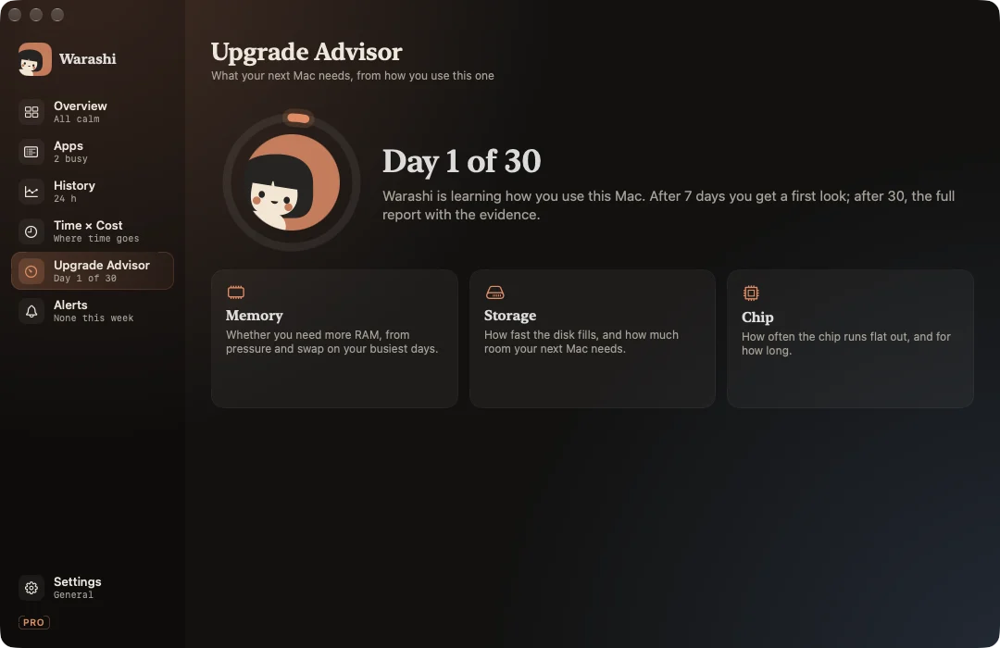

Buying a Mac means guessing: is 16 GB enough? Will 512 GB fill up? Do I need a Pro chip? The Upgrade Advisor answers from how you actually use your Mac.
How it works
Every day Warashi writes one small row of evidence: memory pressure (typical and worst), swap, compressed memory, storage used, minutes under sustained load and minutes the Mac slowed down because of heat. These rows are kept even after the detailed history expires.
- After 7 days: a first look, marked low confidence.
- After 30 days: the full report.
The report
Three answers, each with the evidence behind it:
- Memory: whether you need more, from pressure and swap on your busiest days, rounded to sizes Apple actually sells.
- Storage: how fast your disk fills, and what you need for three years at that rate plus room to spare.
- Chip: how often the chip runs flat out and for how long, and whether a fan or more cores would help.
Export the report card as PNG or PDF to keep or share. With Warashi Pro the report stays up to date; the free version keeps the first report built from your first 30 days.

The thresholds are deliberately cautious and will be tuned with real data. The report is an estimate, not a promise; it always shows the numbers it's based on.